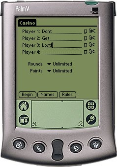

Kasino is a Scorecard for the card game of Kasino as it is played in Denmark. Kasino is probably only of interest for Danes. Nevertheless, an english version is supplied. Both versions contains the full rules of Kasino.
If you would like to localize Kasino to another language, Drop me a mail.
Kasino runs on any Palm OS 2.0 or better device.
Changelog:
v1r2 (2003-06-03) Added backup bit to databases. Databases will now be backed up to your desktop PC during hotsync. v1r1 (2002-11-26) Initial release